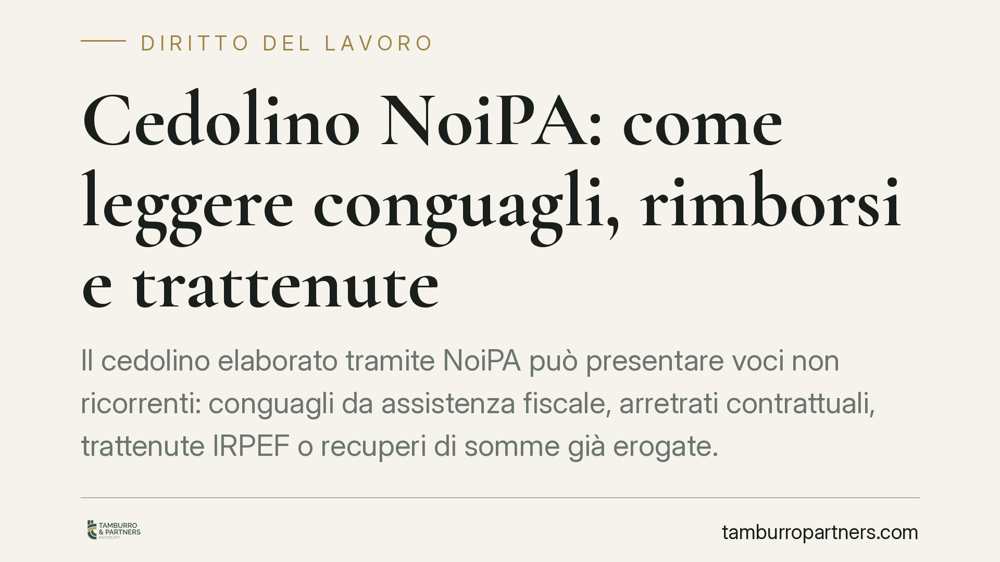

Cedolino NoiPA: come leggere conguagli, rimborsi e trattenute
Il cedolino elaborato tramite NoiPA può presentare voci non ricorrenti: conguagli da assistenza fiscale, arretrati contrattuali, trattenute IRPEF o recuperi di somme già erogate. Non tutte le variazioni sono errori, ma non tutte sono legittime. Sapere leggere queste voci evita sia allarmismi ingiustificati sia acquiescenze affrettate a recuperi contestabili.

Perché il cedolino cambia da un mese all'altro
Le amministrazioni pubbliche liquidano le retribuzioni attraverso la piattaforma NoiPA, gestita dal Ministero dell'Economia e delle Finanze. Molte variazioni mensili sono del tutto fisiologiche: arretrati derivanti dal rinnovo dei contratti collettivi di comparto, conguagli fiscali di fine periodo, adeguamenti di aliquota o applicazione di detrazioni.
Altre voci, invece, meritano attenzione: i recuperi di somme che l'amministrazione ritiene di aver erogato in eccesso. Qui la distinzione tra variazione fisiologica ed errore o indebito diventa decisiva, perché produce conseguenze economiche e giuridiche diverse.
Inquadramento normativo
Sul piano fiscale, l'amministrazione agisce come sostituto d'imposta: opera le ritenute IRPEF e i relativi conguagli ai sensi dell'art. 23 del D.P.R. 600/1973. Quando il dipendente ha presentato il modello 730, il sostituto esegue in busta paga i rimborsi o le trattenute risultanti dall'assistenza fiscale, secondo le regole del D.Lgs. 175/2014 e del D.M. 164/1999. Un conguaglio a debito, in questi casi, non è un errore ma l'esito ordinario della dichiarazione.
Gli arretrati contrattuali discendono invece dai contratti collettivi di comparto vigenti (per il personale scolastico e degli enti di ricerca, il CCNL Istruzione e Ricerca 2019-2021 e i rinnovi successivi). Anche questi sono importi dovuti, non recuperi.
Discorso diverso per il recupero di somme che l'amministrazione qualifica come indebitamente percepite. Qui viene in rilievo la ripetizione dell'indebito ex art. 2033 c.c.: chi ha ricevuto un pagamento non dovuto è tenuto a restituirlo. Ma il recupero non è illimitato nel tempo.
Il nodo della prescrizione e dell'affidamento
Il credito retributivo dell'amministrazione verso il dipendente, in linea di principio, è soggetto al termine di prescrizione ordinario decennale (art. 2946 c.c.), fatte salve le ipotesi in cui trovi applicazione la prescrizione quinquennale prevista dall'art. 2948, n. 4, c.c. per ciò che deve pagarsi periodicamente. La corretta qualificazione della somma incide dunque sul termine entro cui il recupero è ancora esigibile.
La giurisprudenza ha inoltre valorizzato, in materia di ripetizione di emolumenti erogati a pubblici dipendenti, la tutela dell'affidamento del percettore in buona fede, specie quando l'erogazione dipende esclusivamente da un errore dell'amministrazione e le somme sono state consumate nella normale gestione familiare. Non si tratta di un automatismo che esclude sempre la restituzione, ma di un elemento che può incidere su modalità e limiti del recupero. Per questo l'acquiescenza automatica a una trattenuta non è mai la scelta neutra: rinunciare a verificarne titolo e tempestività può precludere contestazioni fondate.
Implicazioni pratiche per il dipendente pubblico
Per il destinatario tipo — personale scolastico, universitario, ministeriale o degli enti pubblici — la questione è concreta. Un conguaglio da 730 a debito non si contesta: è la conseguenza della propria dichiarazione. Un arretrato contrattuale non va restituito: è dovuto.
Un recupero di somme, invece, va sempre esaminato per capire tre cose: se il titolo esiste davvero, se la somma è stata effettivamente erogata in eccesso e se il credito è ancora esigibile o già prescritto. Sono verifiche che incidono sulla legittimità della trattenuta, non semplici formalità.
Cosa fare in concreto
- Scaricate e conservate il cedolino mensile e confrontatelo con quello del mese precedente, isolando le voci nuove o variate.
- Distinguete la natura di ogni voce: conguaglio fiscale, arretrato contrattuale, detrazione, oppure recupero di somme. Sono categorie giuridicamente diverse.
- Non prestate acquiescenza immediata a un recupero: verificate il titolo, l'importo e la data dell'erogazione originaria prima di accettarlo.
- Richiedete all'amministrazione il provvedimento e il conteggio analitico su cui si fonda la trattenuta; è vostro diritto conoscerne il fondamento.
- Fate valutare la posizione quando l'importo è rilevante o l'erogazione originaria risale a diversi anni prima, per verificare prescrizione e legittimità del recupero.
Disclaimer
Contributo informativo a cura di Tamburro & Partners Avvocati (Avv. Giuseppe Tamburro). Non costituisce parere legale.
Ogni storia di lavoro ha i suoi tempi.
Se gestisci HR e vuoi un confronto su contenzioso, ispezioni o licenziamenti, scrivi allo studio. Ti rispondiamo entro un giorno lavorativo.